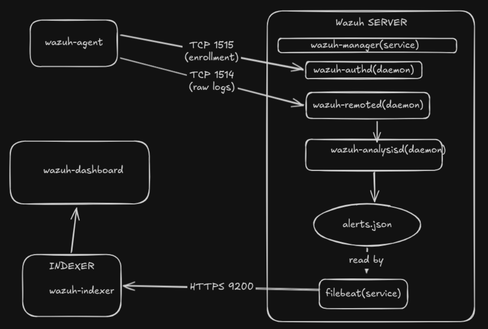

Introduction & What Is Wazuh
EDR?, XDR?, SIEM? do these acronyms just sound like a bunch of jibberish? These are very simple concepts made difficult by accessive use of acronyms. Let's see what each of these mean.
1. Endpoint Detection and Response (EDR)
This is the simplet and the most minimal form of defence in any system. As the name suggests EDR monirots activity on individual devices like laptops, servers and workstations. It watches for malicious processes, file changes, registry modifications, and lateral movement on the endpoint itself.
(Lateral movement is a technique an attacker uses to prograssively move through a network after gaining initial access, working towards their ultimate target. Before an attacker hops to another machine, they do significant work on the compromised endpoint itself like escalating privileges, harvesting credentials, and staging their next move. This is the local phase of lateral movement ie lateral movement within a endpoint.)
It works in two stages:
- Collect: Process tress, file activity, network connections from the device.
- Responds: Isolates and host, kill a process, roll back changes.
EDR is best is you want deep visibility into what's happening in a machine.
It is a minimum security tool every company must use.
Example tools are CrowdStrike Falcon, SentinelOne.
2. Extended Detection and Response (XDR)
As the name suggests, XDR is an extension of EDR.
EDR is scoped to a single endpoint only but XDR has a broader scope
of endpoints + networks + cloud + email + identity.
XDR correlates *telemetry across the entire environment.
Instead of getting alerts from each tool, XDR stiches every alert
to give the complete story.
(WHAT IS TELEMETRY? It is the automated process of collecting data and from remote sources and transmitting them to a central location for monitoring and analysis).
XDR's two step process is:
- Collects: endpoints, network traffic, email, cloud workloads, identity providers.
- Responds: coordinated response across multiple layers simultaneously.
It is best for reducing alert fatigue and seeing the full kill chain. Examples are Palo Alto Cortex XDR, Trend Vision One (which is the flagship product of trend micro), Wazuh platform etc.
3. Security Information and Event Management (SIEM)
We saw EDR was scoped to an endpoint, XDR extended the scope to emails, clouds, network and identity providers. This still doesnot cover the entire network of an organization, we expand the scope further now and introduce SEIM. While EDR zooms in on individual devices and XDR connects the dots between a few critical security layers, a SIEM (pronounced "sim") acts as the ultimate brain of a Security Operations Center (SOC). SIEM tools do not just monitor endpoints or networks, they ingest massive quantities of log data from absolutely everywhere in an enterprise ecosystem. This includes domain controllers, firewalls, databases, switches, antivirus software, and custom applications.
A SIEM serves two primary functions:
- Log Aggregation & Management: Gathering, normalizing, and archiving terabytes of historical logs from diverse sources into a central, searchable repository.
- Security Analytics & Correlation: Running complex, real-time query rules across those logs to catch sophisticated threats that look innocent in isolation but reveal an attack when viewed together.
The Correlation Difference: If a single user fails a login on a laptop, EDR notes it locally. If that same user fails a login across 40 different servers and a firewall simultaneously, a SIEM flags it as a coordinated brute-force attack.
So why even bother with XDR if siem has bigger scope?
→ SIEM has broader visibility and centralized log analysis,
while XDR focuses on deeper detection and faster automated response across
integrated security tools.
NOTE: A big misconception is that SIEM is a passive tool that
cannot take automated action.
SIEM platforms can absolutely support automated actions,
especially when integrated with SOAR.
SOAR stands for Security Orchestration, Automation, and Response.
It is a stack of software solutions that allows organizations to
streamline their security operations by integrating disjointed tools,
automating repetitive tasks, and executing predefined incident response
workflows without human intervention.
Introducing Wazuh
Wazuh is a popular open source security platform that began as a fork of
the OSSEC project. (learn more on ossec)
It has now evolved into a unified system by combining SIEM analytics with Host
Intrusion Detection and EDR/XDR capabilities.
Key capabilities of wazuh
- Log Data Analysis: Wazuh agents extract raw log data from operating systems and applications, while the Wazuh Manager uses built-in "decoders" and rules to parse and alert on malicious behavior in real time.
- HIDS (Host-Based Intrusion Detection): It monitors system calls, handles rootkit/malware detection, and spots anomalies or indicators of compromise (IoCs) occurring directly on your infrastructure.
- File Integrity Monitoring (FIM): FIM tracks sensitive directories and registry keys. If an unauthorized user or process creates, modifies, or deletes a critical system file, Wazuh logs the user ID, the application responsible, and triggers an immediate alert.
- Vulnerability Detection: The Wazuh agent inventories all installed software on an endpoint and correlates it with continuously updated CVE (Common Vulnerabilities and Exposures) databases, highlighting unpatched security flaws automatically.
- Regulatory Compliance: Out of the box, Wazuh maps its alerts and Security Configuration Assessments (SCA) to major compliance frameworks. Dashboard views can be filtered cleanly by specific control tags for PCI DSS, HIPAA, GDPR, and NIST 800-53, making it incredibly easy to provide audit-ready proof to regulators.
Wazuh Architecture Overview
Wazuh has four primary components:
- Wazuh server (Manager + Filebeat)
- Indexer
- Dashboard
- Agent
To understand all these, lets take a look at how things flow within wazuh.

Wazuh Agent
This is the program that is installed on all clients (endpoints). These agents collect
logs and send the raw logs to the wazuh server.
The primary service is: wazuh-agent
Important files of agent
/var/ossec/etc/ossec.conf— Main agent config/var/ossec/logs/ossec.log— Agent logs/var/ossec/etc/client.keys— Authentication key/var/ossec/queue/— Event queues/var/ossec/etc/shared/— Shared configs from manager
Agent communicates with manager using 2 ports:
TCP port 1514 for agent event/log forwarding
TCP port 1515 for agent enrollment
Overwhelmed? Don't be — we will cover all of these during our lab setup section.
Wazuh Manager
The main service is: wazuh-manager
The roles of wazuh manager (and the daemons that perform specific roles) are:
| Daemon | Purpose |
|---|---|
| wazuh-remoted | Receives agent logs |
| wazuh-analysisd | Decoding and rule engine processing |
| wazuh-authd | Agent enrollment and authentication |
| wazuh-db | Agent database management |
| wazuh-monitord | Monitoring and log rotation |
| wazuh-modulesd | Runs modules like Syscollector and vulnerability detection |
| wazuh-execd | Executes active response actions |
| wazuh-integratord | Handles external integrations |
| wazuh-maild | Sends email alerts |
| wazuh-csyslogd | Syslog forwarding service |
| wazuh-agentlessd | Agentless monitoring |
| wazuh-logcollector | Collects local logs |
| wazuh-apid | Provides REST API services |
| wazuh-syscheckd | File Integrity Monitoring (FIM) |
| wazuh-rootcheck | Rootkit and malware detection |
How Logs Flow Through the Manager
Step 1 — Agent Collects Logs
wazuh-logcollector reads logs from:
- /var/log/auth.log
- Windows Event Logs
- Apache logs
- Syslog
- Custom application logs
Configured inside:
<localfile> <location>/var/log/auth.log</location> <log_format>syslog</log_format> </localfile>
File location:
/var/ossec/etc/ossec.conf
Step 2 — Agent Sends Logs
Agent sends events to the manager using:
1514/TCP
Handled by:
wazuh-remoted
Step 3 — Decoding
The manager passes logs to:
wazuh-analysisd
Analysisd uses:
- Decoders
- Rules
Decoders
Decoders parse raw logs into structured fields.
Example log:
Failed password for root from 192.168.1.5
Decoded result:
{
"user": "root",
"srcip": "192.168.1.5"
}
Important Decoder Locations
| Path | Purpose |
|---|---|
| /var/ossec/ruleset/decoders/ | Default decoders |
| /var/ossec/etc/decoders/ | Custom decoders |
Step 4 — Rules Engine
Parsed logs are matched against XML rules.
Rule Files
| Path | Purpose |
|---|---|
| /var/ossec/ruleset/rules/ | Default rules |
| /var/ossec/etc/rules/ | Custom rules |
Example Rule
<rule id="5710" level="5"> <if_sid>5700</if_sid> <match>Failed password</match> <description>SSH authentication failed</description> </rule>
Step 5 — Alert Generation
If a rule matches:
ALERT GENERATED
The alert includes:
- Rule ID
- Severity level
- Agent name
- Timestamp
- Full log
- MITRE ATT&CK mapping
- Compliance tags
Alert Files
| File | Purpose |
|---|---|
| /var/ossec/logs/alerts/alerts.log | Human-readable alerts |
| /var/ossec/logs/alerts/alerts.json | Structured JSON alerts |
Archive File
| File |
|---|
| /var/ossec/logs/archives/archives.json |
Filebeat
Service: filebeat
Filebeat is installed on the Wazuh server.
Its job:
Read alerts.json → Send to Indexer
Important Filebeat Files
| File | Purpose |
|---|---|
| /etc/filebeat/filebeat.yml | Main Filebeat config |
| /etc/filebeat/certs/ | TLS certificates |
| /usr/share/filebeat/module/wazuh/ | Wazuh module |
| /var/log/filebeat/ | Filebeat logs |
Filebeat Workflow
alerts.json
↓
Filebeat reads JSON
↓
Converts to OpenSearch docs
↓
Sends HTTPS requests
↓
Indexer stores documents
Port Used
| Port | Protocol |
|---|---|
| 9200 | HTTPS |
Wazuh Indexer
Service: wazuh-indexer
Based on:
- OpenSearch
- Elasticsearch lineage
Internal Components
| Component | Purpose |
|---|---|
| Index engine | Stores documents |
| Query engine | Searches alerts |
| Shards/replicas | Scalability |
| ISM | Index lifecycle management |
| REST API | Dashboard/API access |
Important Indexer Files
| File | Purpose |
|---|---|
| /etc/wazuh-indexer/opensearch.yml | Main configuration |
| /etc/wazuh-indexer/jvm.options | JVM memory settings |
| /usr/share/wazuh-indexer/ | Core binaries |
| /var/log/wazuh-indexer/ | Indexer logs |
Index Patterns
| Index | Purpose |
|---|---|
| wazuh-alerts-* | Security alerts |
| wazuh-archives-* | All raw events |
| wazuh-monitoring-* | Agent status |
| wazuh-statistics-* | Wazuh statistics |
How Indexing Works
Example JSON
{
"rule": {
"level": 5,
"description": "SSH login failed"
},
"agent": {
"name": "ubuntu-server"
}
}
Indexer Processing
- Receives JSON over REST API
- Maps fields
- Creates searchable documents
- Stores data in indices
- Builds inverted indexes
Capabilities Enabled
- Fast searching
- Aggregations
- Dashboards
- Filtering
- Threat hunting
Wazuh Dashboard
Service: wazuh-dashboard
Based on:
- OpenSearch Dashboards
- Kibana-like interface
Important Dashboard Files
| File | Purpose |
|---|---|
| /etc/wazuh-dashboard/opensearch_dashboards.yml | Main dashboard configuration |
| /usr/share/wazuh-dashboard/plugins/wazuh/ | Wazuh plugin |
| /var/log/wazuh-dashboard/ | Dashboard logs |
Dashboard Communication
| Destination | Purpose | Port |
|---|---|---|
| Wazuh API | Manager information/configuration | 55000 |
| Wazuh Indexer | Alert search and visualization | 9200 |
Full End-to-End Event Flow
1. Attacker attempts SSH login
↓
2. auth.log updated
↓
3. wazuh-logcollector reads log
↓
4. Agent sends event to manager (1514/TCP)
↓
5. wazuh-remoted receives event
↓
6. wazuh-analysisd decodes log
↓
7. Rules matched
↓
8. Alert generated
↓
9. alerts.json updated
↓
10. Filebeat reads alerts.json
↓
11. Sends HTTPS JSON to indexer (9200)
↓
12. Indexer indexes document
↓
13. Dashboard queries index
↓
14. Alert visible in UI
Important Wazuh Configuration Files
Core Files
| File | Purpose |
|---|---|
| /var/ossec/etc/ossec.conf | Main Wazuh configuration |
| /var/ossec/etc/client.keys | Agent authentication |
| /var/ossec/etc/local_internal_options.conf | Advanced tuning |
| /var/ossec/etc/internal_options.conf | Internal settings |
Rules and Decoders
| Path | Purpose |
|---|---|
| /var/ossec/ruleset/rules/ | Default rules |
| /var/ossec/etc/rules/ | Custom rules |
| /var/ossec/ruleset/decoders/ | Default decoders |
| /var/ossec/etc/decoders/ | Custom decoders |
Logging Files
| File | Purpose |
|---|---|
| /var/ossec/logs/ossec.log | Main manager log |
| /var/ossec/logs/alerts/alerts.json | Structured alerts |
| /var/ossec/logs/alerts/alerts.log | Text alerts |
| /var/ossec/logs/archives/archives.json | All archived logs |
Installation: Server & Dashboard
PLACEHOLDER — server installation
Quickstart with the Wazuh installation assistant script vs manual installation.
Cover: prerequisites, OS support, the install command, what gets installed, accessing the dashboard.
Default credentials. Verifying the cluster is healthy. Firewall ports to open.
Deploying Agents
PLACEHOLDER — agent deployment
Installing agents on: Linux (deb/rpm), Windows (MSI), macOS.
Registering agents: auto-enrollment vs manual. The ossec.conf agent config file.
Verifying agent connectivity from the dashboard and from the CLI (agent_control).
Mass deployment options: Ansible, Puppet, Group Policy.
Log Collection & Analysis
PLACEHOLDER — log analysis
Configuring log sources in ossec.conf: <localfile> blocks. Syslog, JSON, multi-line logs.
How the decoder + rule pipeline works. Reading alerts in /var/ossec/logs/alerts/.
Using the dashboard to search and filter events (Discover view).
Adding custom log files (e.g. application logs, nginx access logs).
File Integrity Monitoring (FIM)
PLACEHOLDER — FIM
How Wazuh's FIM (formerly syscheck) works: scheduled vs real-time vs whodata mode.
Configuring directories to monitor, file types, recursion, ignore patterns.
Understanding FIM alerts in the dashboard. Alerting on specific file changes.
Vulnerability Detection
PLACEHOLDER — vulnerability detection
How the vulnerability detector module works: inventory of installed packages → CVE lookup.
Enabling it in ossec.conf. Supported OS targets. Where results appear in the dashboard.
Interpreting severity scores. Exporting vulnerability reports.
Active Response
PLACEHOLDER — active response
What active response does: automated actions triggered by rules (e.g. firewall-drop on brute-force).
Built-in active response scripts. Configuring <active-response> in ossec.conf.
Writing a custom active response script. Testing safely in a lab environment.
Writing Custom Rules
PLACEHOLDER — custom rules
Rule XML structure: <rule id="..." level="...">. Decoders vs rules.
Matching on log content, program name, srcip, user. if_sid, if_matched_sid.
Rule frequency and timeframe for detecting repeated events (brute-force pattern).
Where to place custom rules: /var/ossec/etc/rules/local_rules.xml.
Testing rules with /var/ossec/bin/wazuh-logtest.
Integrations: VirusTotal, Slack, PagerDuty
PLACEHOLDER — integrations
VirusTotal integration for file hash lookups on FIM events.
Slack/webhook integration for alert notifications.
PagerDuty or OpsGenie for on-call alerting.
How to configure <integration> blocks in ossec.conf. Using the Wazuh API.
Tuning & Reducing Alert Noise
PLACEHOLDER — tuning
This is where most real-world Wazuh work happens. Strategies: raising rule levels, adding ignore rules,
fine-tuning FIM exclusions, whitelisting known-good IPs, suppressing noisy built-in rules.
Using the Ruleset Testing tab. Setting minimum alert level for notifications.
Dashboard saved searches and alert thresholds.
Troubleshooting & Useful Commands
PLACEHOLDER — troubleshooting
Common issues: agent not connecting, indexer out of disk, rules not firing.
Key log files: /var/ossec/logs/ossec.log, alerts.log, api.log.
Useful commands: agent_control, wazuh-logtest, cluster_control, wazuh-indexer health checks.
Restarting services: systemctl restart wazuh-manager / wazuh-dashboard / wazuh-indexer.